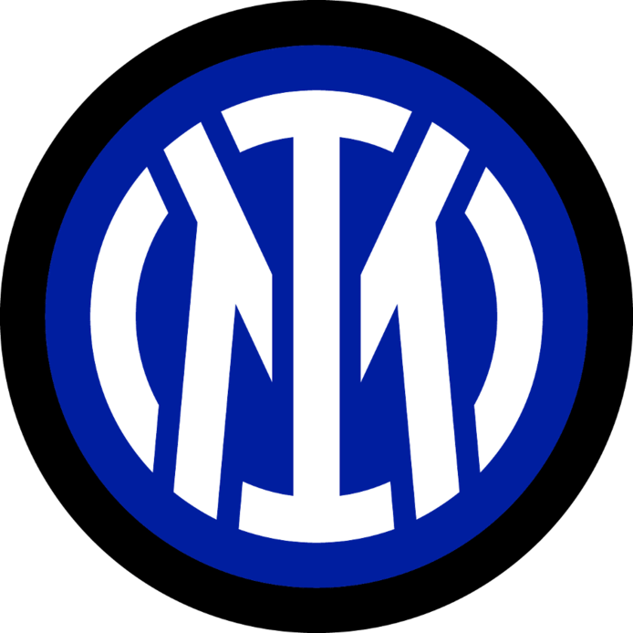

Welkom op intermilaaninfo.nl
Welkom op deze informatieve website gewijd over Inter Milaan. Hier ontdek je meer over de prijzenkast, het huidige seizoen, beste spelers, het bestuur, de jeugd van deze voetbalclub. Of je nu een fan bent of net begint met het volgen van Inter Milaan, we heten je graag welkom op deze website. Duik in de wereld van de Nerazzurri en ontdek wat deze club zo uniek maakt. Neem rustig de tijd om de informatie te verkennen en leer meer over Inter Milaan. Als er een probleem is, of als je een vraag over iets hebt, aarzel dan niet om contact met mij op te nemen.
Over Inter Milaan
Inter Milaan is een voetbalclub gevestigd in Milaan, Italië, en staat bekend als een van de meest succesvolle en populaire clubs in het Italiaanse voetbal. De club werd opgericht in 1908 en heeft sindsdien een rijke geschiedenis opgebouwd. Inter, ook wel bekend als FC Internazionale Milano, heeft een blauw-zwarte kleurstelling en speelt zijn thuiswedstrijden in het iconische San Siro-stadion, dat ze delen met aartsrivaal AC Milan.

Inter heeft door de jaren heen talrijke nationale en internationale prijzen gewonnen, waaronder meerdere Serie A-titels en UEFA Champions League-trofeeën. De club heeft enkele van 's werelds beste spelers aangetrokken en staat bekend om zijn gepassioneerde fanbase. Met een rijke erfenis in het Italiaanse voetbal blijft Inter Milaan een krachtige en gerespecteerde speler in zowel nationale als internationale competities.
